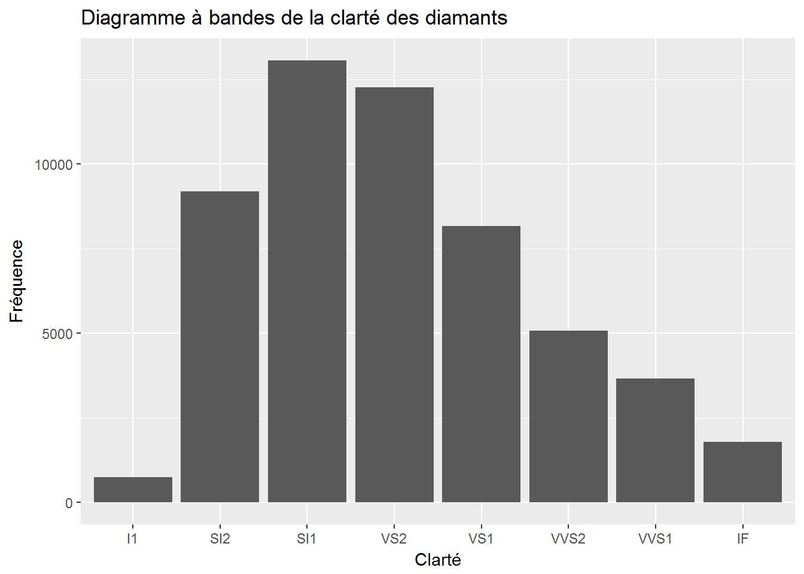
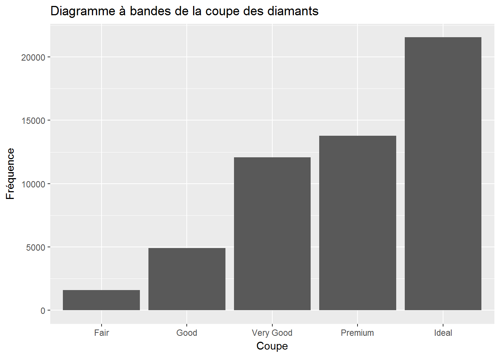
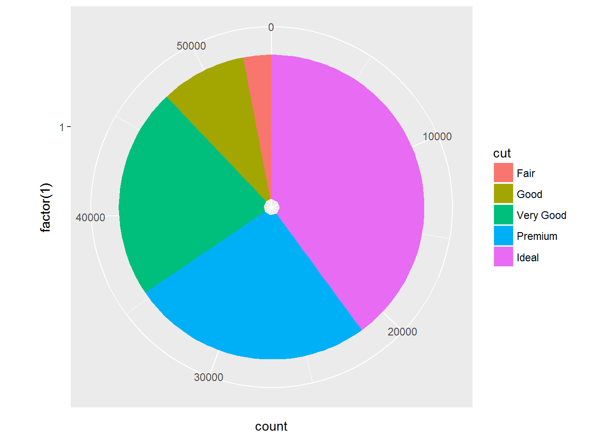
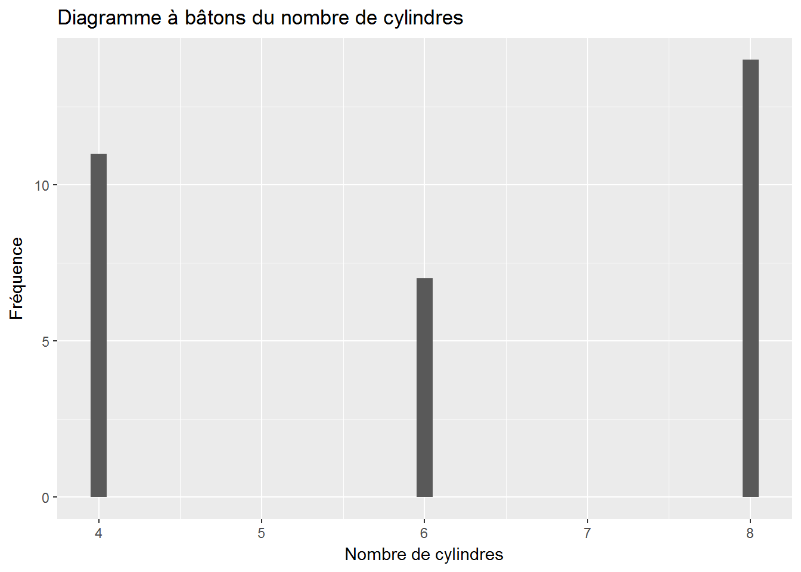
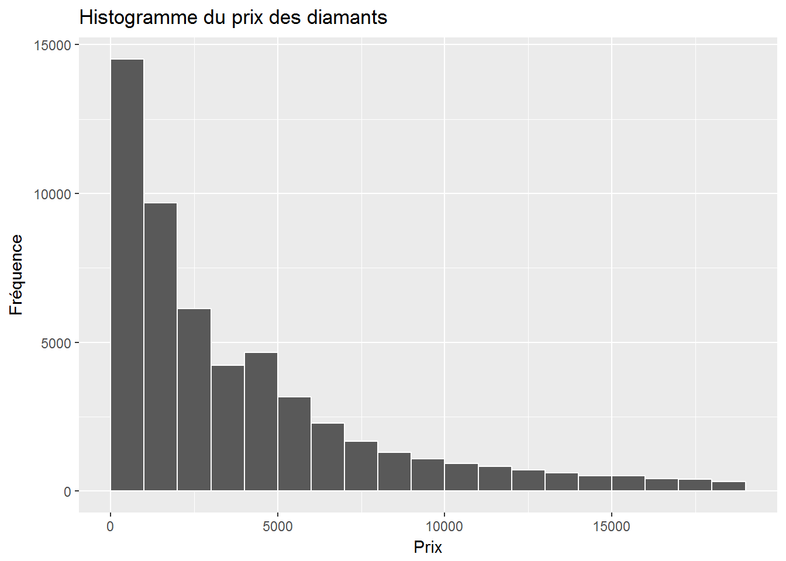
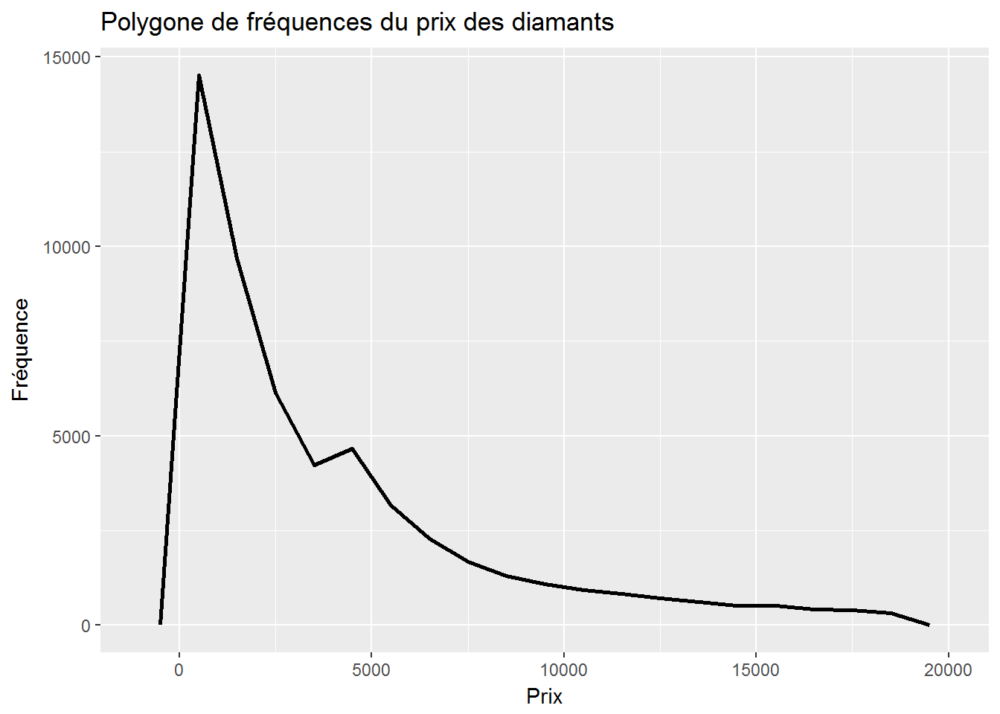
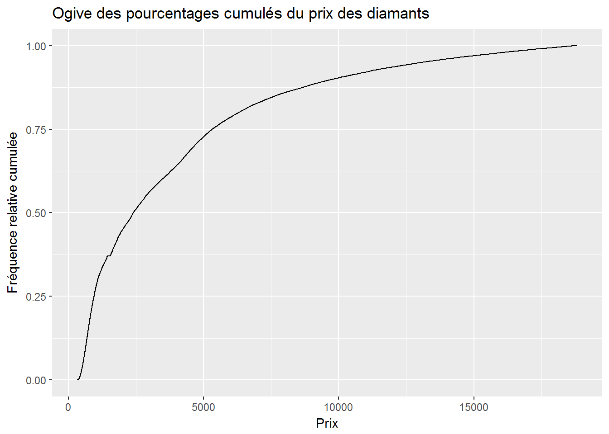
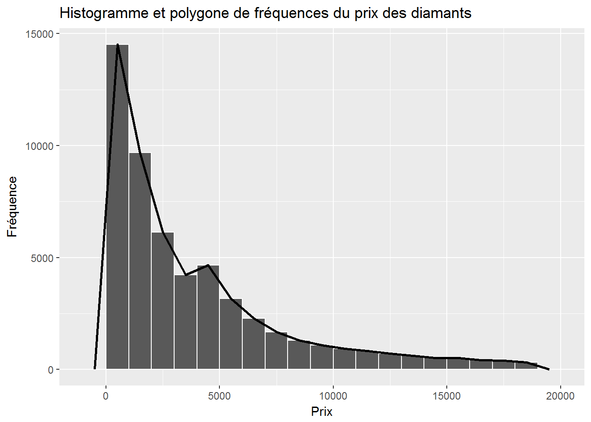

Chapitre 2 Présentation des données
Pour débuter, nous allons charger les paquetages utiles:
library(dplyr)
library(ggplot2)
library(knitr)Pour introduire la présentation des données, nous allons utiliser la base de données mtcars et la base de données diamonds, que nous avons utilisé à la section 1.1.4.
La base de données mtcars a été extraite du magazine Motor Trend de l’année 1974, et comprend la consommation d’essence et 10 autres aspects de design automobile pour 32 automobiles (modèles 1973-1974).
Les 11 variables de cette base de données sont:
mpg: Miles/ (US) galloncyl: Nombre de cylindresdisp: Déplacement en pouces cubehp: Nombre de chevaux-vapeurdrat: Ratiowt: Poids (1000 livres)qsec: Temps pour le quart de milevs: V/Sam: Transmission (0 = automatique, 1 = manuelle)gear: Nombre de vitessescarb: Nombre de carburateurs
mtcars## mpg cyl disp hp drat wt qsec vs am gear carb
## Mazda RX4 21.0 6 160.0 110 3.90 2.620 16.46 0 1 4 4
## Mazda RX4 Wag 21.0 6 160.0 110 3.90 2.875 17.02 0 1 4 4
## Datsun 710 22.8 4 108.0 93 3.85 2.320 18.61 1 1 4 1
## Hornet 4 Drive 21.4 6 258.0 110 3.08 3.215 19.44 1 0 3 1
## Hornet Sportabout 18.7 8 360.0 175 3.15 3.440 17.02 0 0 3 2
## Valiant 18.1 6 225.0 105 2.76 3.460 20.22 1 0 3 1
## Duster 360 14.3 8 360.0 245 3.21 3.570 15.84 0 0 3 4
## Merc 240D 24.4 4 146.7 62 3.69 3.190 20.00 1 0 4 2
## Merc 230 22.8 4 140.8 95 3.92 3.150 22.90 1 0 4 2
## Merc 280 19.2 6 167.6 123 3.92 3.440 18.30 1 0 4 4
## Merc 280C 17.8 6 167.6 123 3.92 3.440 18.90 1 0 4 4
## Merc 450SE 16.4 8 275.8 180 3.07 4.070 17.40 0 0 3 3
## Merc 450SL 17.3 8 275.8 180 3.07 3.730 17.60 0 0 3 3
## Merc 450SLC 15.2 8 275.8 180 3.07 3.780 18.00 0 0 3 3
## Cadillac Fleetwood 10.4 8 472.0 205 2.93 5.250 17.98 0 0 3 4
## Lincoln Continental 10.4 8 460.0 215 3.00 5.424 17.82 0 0 3 4
## Chrysler Imperial 14.7 8 440.0 230 3.23 5.345 17.42 0 0 3 4
## Fiat 128 32.4 4 78.7 66 4.08 2.200 19.47 1 1 4 1
## Honda Civic 30.4 4 75.7 52 4.93 1.615 18.52 1 1 4 2
## Toyota Corolla 33.9 4 71.1 65 4.22 1.835 19.90 1 1 4 1
## Toyota Corona 21.5 4 120.1 97 3.70 2.465 20.01 1 0 3 1
## Dodge Challenger 15.5 8 318.0 150 2.76 3.520 16.87 0 0 3 2
## AMC Javelin 15.2 8 304.0 150 3.15 3.435 17.30 0 0 3 2
## Camaro Z28 13.3 8 350.0 245 3.73 3.840 15.41 0 0 3 4
## Pontiac Firebird 19.2 8 400.0 175 3.08 3.845 17.05 0 0 3 2
## Fiat X1-9 27.3 4 79.0 66 4.08 1.935 18.90 1 1 4 1
## Porsche 914-2 26.0 4 120.3 91 4.43 2.140 16.70 0 1 5 2
## Lotus Europa 30.4 4 95.1 113 3.77 1.513 16.90 1 1 5 2
## Ford Pantera L 15.8 8 351.0 264 4.22 3.170 14.50 0 1 5 4
## Ferrari Dino 19.7 6 145.0 175 3.62 2.770 15.50 0 1 5 6
## Maserati Bora 15.0 8 301.0 335 3.54 3.570 14.60 0 1 5 8
## Volvo 142E 21.4 4 121.0 109 4.11 2.780 18.60 1 1 4 22.1 Variables qualitatives
2.1.1 Tableaux de fréquences
Nous pouvons représenter des variables qualitatives sous forme de tableau. Nous allons utiliser la commande tabfreq. Voici comment l’utiliser pour représenter la variable cut de la base de données diamonds.
tabfreq(diamonds$cut)| diamonds$cut | Fréquence | Fréquence relative | Fréquence relative cumulée |
|---|---|---|---|
| Fair | 1610 | 0.030 | 0.030 |
| Good | 4906 | 0.091 | 0.121 |
| Very Good | 12082 | 0.224 | 0.345 |
| Premium | 13791 | 0.256 | 0.600 |
| Ideal | 21551 | 0.400 | 1.000 |
| Total | 53940 | 1.000 | 1.000 |
Nous pouvons également étudier la variable clarity.
tabfreq(diamonds$clarity)| diamonds$clarity | Fréquence | Fréquence relative | Fréquence relative cumulée |
|---|---|---|---|
| I1 | 741 | 0.014 | 0.014 |
| SI2 | 9194 | 0.170 | 0.184 |
| SI1 | 13065 | 0.242 | 0.426 |
| VS2 | 12258 | 0.227 | 0.654 |
| VS1 | 8171 | 0.151 | 0.805 |
| VVS2 | 5066 | 0.094 | 0.899 |
| VVS1 | 3655 | 0.068 | 0.967 |
| IF | 1790 | 0.033 | 1.000 |
| Total | 53940 | 1.000 | 1.000 |
2.1.2 Diagramme à bandes
Pour les variables qualitatives, le diagramme à bandes est le graphique de choix.
Pour la variable clarity.
ggplot(diamonds, aes(clarity)) + geom_bar() +
labs(
x = "Clarté",
y = "Fréquence",
title = "Diagramme à bandes de la clarté des diamants")
Pour la variable cut.
ggplot(diamonds, aes(cut)) + geom_bar() +
labs(
x = "Coupe",
y = "Fréquence",
title = "Diagramme à bandes de la coupe des diamants")
2.1.3 Diagramme circulaire
ggplot(diamonds, aes(x = factor(1), fill = cut)) +
geom_bar() +
coord_polar(theta = "y")
2.2 Variables quantitatives
2.2.1 Tableaux de fréquences
Pour une variable quantitative discrète, il suffit d’utiliser la fonction tabfreq pour représenter les données sous forme de tableau. Par exemple, pour la variable cyl de la base de données mtcars.
tabfreq(mtcars$cyl)| mtcars$cyl | Fréquence | Fréquence relative | Fréquence relative cumulée |
|---|---|---|---|
| 4 | 11 | 0.344 | 0.344 |
| 6 | 7 | 0.219 | 0.562 |
| 8 | 14 | 0.438 | 1.000 |
| Total | 32 | 1.000 | 1.000 |
Pour représenter une variable quantitative continue sous forme de tableau, il faut effectuer un traitement préalable sur les données.
Étudions la variable carat de la base de données diamonds. Si nous tentons d’utiliser la commande tabfreq directement, nous allons obtenir une table beaucoup trop grande. En effet, la variable carat possède 273 valeurs différentes!
Pour représenter la variable correctement, nous allons débuter par observer l’étendue des valeurs possibles de cette variable en utilisant la commande range. Nous avons donc:
range(diamonds$carat)## [1] 0.20 5.01La sortie de R signifie que la valeur la plus petite de carat est 0.2, et que la plus grande est 5.01.
Nous voulons maintenant recoder notre variable carat pour obtenir des classes. Dans notre exemple, il semble adéquat de créer des classes de largeur 1 en débutant à 0 et en terminant à 6. L’option breaks permet de décider des classes et l’option right permet de fermer l’intervalle à gauche et de l’ouvrir à droite.
carat_class = cut(diamonds$carat,
breaks = seq(from = 0, to = 6, by = 1),
right = FALSE)
tabfreq(carat_class)| carat_class | Fréquence | Fréquence relative | Fréquence relative cumulée |
|---|---|---|---|
| [0,1) | 34880 | 0.647 | 0.647 |
| [1,2) | 16906 | 0.313 | 0.960 |
| [2,3) | 2114 | 0.039 | 0.999 |
| [3,4) | 34 | 0.001 | 1.000 |
| [4,5) | 5 | 0.000 | 1.000 |
| [5,6) | 1 | 0.000 | 1.000 |
| Total | 53940 | 1.000 | 1.000 |
2.2.2 Diagramme à bâtons
Pour les variables quantitatives discrètes, le diagramme à bâtons est le graphique de choix.
ggplot(mtcars, aes(cyl)) +
geom_bar(width = 0.1) +
labs(
x = "Nombre de cylindres",
y = "Fréquence",
title = "Diagramme à bâtons du nombre de cylindres")
2.2.3 Histogramme
Pour les variables quantitatives discrètes, il est possible d’utiliser l’histogramme.
ggplot(diamonds, aes(price)) +
geom_histogram(color = "white",binwidth = 1000, center = 500) +
labs(
x = "Prix",
y = "Fréquence",
title = "Histogramme du prix des diamants")
2.2.4 Polygone de fréquences
Pour les variables quantitatives discrètes, il est possible d’utiliser le polygone de fréquences.
ggplot(diamonds, aes(price)) +
geom_freqpoly(size = 1,binwidth = 1000, center = 500) +
labs(
x = "Prix",
y = "Fréquence",
title = "Polygone de fréquences du prix des diamants")
2.2.5 Ogive des pourcentages cumulés
Pour les variables quantitatives discrètes, il est possible d’utiliser l’ogive des pourcentages cumulés.
ggplot(diamonds, aes(price)) +
stat_ecdf(pad = FALSE) +
labs(
x = "Prix",
y = "Fréquence relative cumulée",
title = "Ogive des pourcentages cumulés du prix des diamants")
2.2.6 Histogramme et polygone de fréquences
Pour les variables quantitatives discrètes, il est possible d’utiliser l’histogramme et le polygone de fréquences.
ggplot(diamonds, aes(price)) +
geom_histogram(color = "white",,binwidth = 1000, center = 500) +
geom_freqpoly(size = 1,,binwidth = 1000, center = 500) +
labs(
x = "Prix",
y = "Fréquence",
title = "Histogramme et polygone de fréquences du prix des diamants")